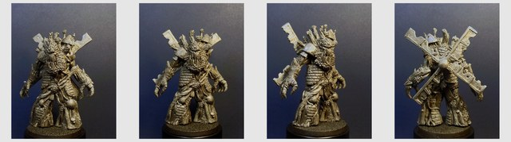
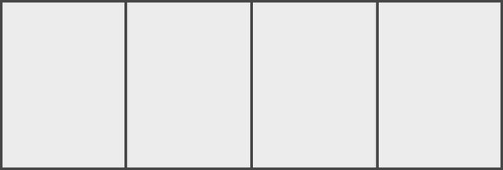
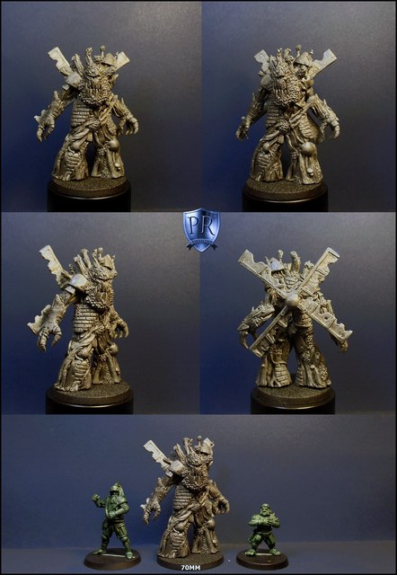
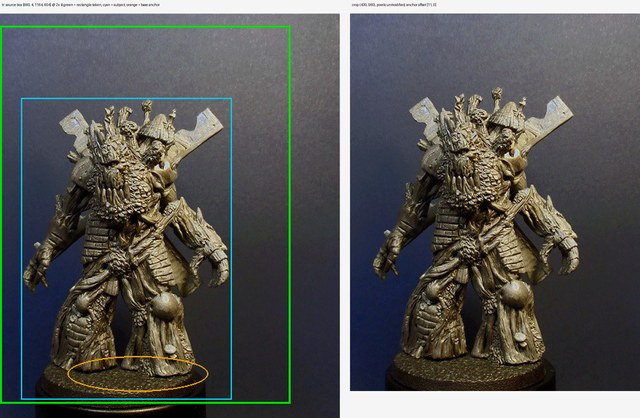
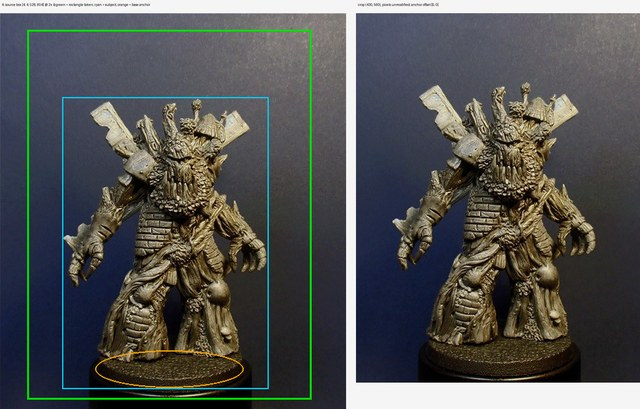
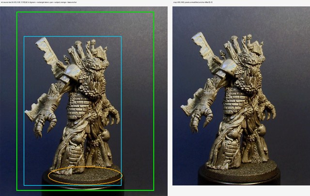
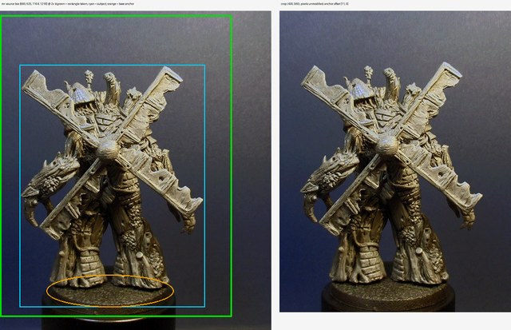

Treeman-windmill — Round 16 runbook (tentative)
📋 Review panel — at round closeGoal
Re-run round 14 with one variable changed: the source the model copies from. r14's four reference panels were framed and scaled differently, and carried the PR logo, all of which the image model reads as part of the subject. r15 rebuilds that reference — identically-sized rectangles anchored on each display base, logo excluded — and this round repeats r14's sweep on it unchanged, so the twelve sheets are directly comparable to r14's twelve and we learn what the sloppy framing actually cost us. Nothing else moves: same rotational panel order, same two models, same two layouts, same three sail treatments, same prompts.
The choices on the table
Everything below runs on the same rotational turntable built in r15, and each cell attaches two images — that turntable plus the matching blank panel template. Every treatment runs on both models (grokq and flash31) at both layouts (2×2 and 1×4), so each row is four calls. The three rows are the same three sail treatments r14 tested; r14 answered the sail question empirically in favour of B, but it answered it on the dirty input, so all three are back on the table for one clean comparison.
| Choice | What it tests | Input(s) | Rolls |
|---|---|---|---|
| A — full-fidelity sails | Whether a clean reference lets either model hold the sculpt's real sail build — a spar rail with plank boards and frayed cloth webs between them. On the dirty input grokq ignored this and flattened it to a slab anyway. | r15 turntable + template | 4 |
| B — boarded-solid sails | The compromise r14 landed on: spar plus thick boards, gaps filled solid, no thin cloth. Favoured because the r14 Meshy probe showed the rotor is the fragile, break-prone feature. | r15 turntable + template | 4 |
| C — solid-slab sails | Accepting a plain tattered slab and relaxing the C2 detector — the simplest thing to print, the least faithful to the sculpt. | r15 turntable + template | 4 |
Twelve generation calls in total, matching r14 cell for cell.
Inputs — what this round runs on
Everything that goes in, grouped by the choice it belongs to. Click any image to zoom; open a prompt to read the exact text this round spends against. Crop sets show both the cut overview and every exact output crop.
Shared input — the cleaned rotational turntable5 images
Every cell below attaches two images: the turntable for its layout, and the matching blank panel template. The four panels are the TreeMolin sculpt photos isolated one at a time — studio backdrop and display base removed, the PR shield excluded by the source box — then composed in rotational order TR, TL, ML, MR (-20 degrees, 0, +45, 180) at a single figure scale. This is the one thing r15 changes from r14, which used the same photographs almost as-is.
treeman-r15-source-4view-turntable-2x2
treeman-r15-source-4view-turntable-1x4
treeman-r15-template-2x2
treeman-r15-template-1x4
treeman-r12-source-treemolin
A — full-fidelity sails1 prompt
Asks for the sculpt's real sail build: a spar rail with about three plank boards down one side and frayed cloth webs in the gaps.
Text-only — no image inputs; the prompt below is the whole input.
Prompt — r14-clay-turnaround-A.txt 4 kB
projects/treeman-windmill/prompts/r14-clay-turnaround-A.txt
TWO images are attached. Image 1 is a 4-view REFERENCE turnaround of ONE physical sculpted miniature — an ancient hulking treeman fused with a ruined windmill — with its panels ALREADY in the target slot order, a smooth rotational turntable: slot 1 = NEAR-FRONT (body turned only ~20°, the face angled slightly toward the VIEWER'S LEFT); slot 2 = straight FRONT, face square to the viewer; slot 3 = RIGHT THREE-QUARTER (body yawed ~45° so the smooth pauldron shoulder turns toward the camera and the face angles toward the VIEWER'S RIGHT); slot 4 = BACK (the full rotor X and ball hub centered, the face hidden). Image 2 is a blank panel template. TASK: repaint this EXACT sculpt as a clean monochrome matte CLAY-SCULPT concept turnaround, like a ZBrush screenshot. Repaint each reference panel into the MATCHING template slot, following the template's reading order (a single horizontal row = left to right; a 2x2 grid = top-left, top-right, then bottom-left, bottom-right). Keep the SAME camera angle per slot as the reference, and the SAME design, hulking pose and proportions in every slot. The reference is the truth for every feature: the gaping root-fang maw embedded in the chest, the heavy bark brow, the pinecone-scale beard, the branch-stub crown with the tilted conical thatched mill cap and mushrooms, the horizontal brick courses banding the belly, the smooth wooden pauldron plate on one shoulder, the jagged plank along the opposite forearm, the horned beast head sculpted into the back of that same forearm (visible in the back view), the twisted vine sash, the round puffball growths at the hips, the huge chunky segmented talon-claws, and the thick flared root-trunk legs. THE ROTOR: exactly FOUR weathered plank sails in an X configuration (diagonals), radiating from a large wooden BALL hub on the mid-back. In the near-front and front views (slots 1 and 2) only the two UPPER blades project past the silhouette; the lower two stay hidden behind the body and arms. In the BACK view (slot 4) the full X and ball hub are centered and clearly visible. SAIL CONSTRUCTION: build each of the four sails exactly as the reference sculpt shows — a single rigid SPAR RAIL rooted in the ball hub with ALL of the sail's surface hanging to ONE side of that rail; about THREE plank BOARDS branch off that side, and thin frayed SAIL-CLOTH webs stretch in the gaps between the boards (torn scalloped edges, sagging knotted scraps, furled rather than flat). Keep the spar + boards + cloth read distinct. Fill only the source's small round through-holes; KEEP the cloth webs. Rebuild the source's broken bare lower-left spar (back view) into a matching spar+boards+cloth sail. SIDE ANCHORS (do not mirror the body): the smooth wooden pauldron plate, the jagged plank forearm and the pincer hand are all the SAME arm. In the near-front and front views (slots 1 and 2) that pauldron/plank/pincer arm is on the VIEWER'S LEFT and the BIG CLAW hand is on the VIEWER'S RIGHT. In slot 3 (right three-quarter) the pauldron shoulder is the one rotated toward the camera. In the BACK view (slot 4) the pauldron/plank arm is on the VIEWER'S RIGHT, and the horned beast head on the back of the opposite (big-claw) forearm appears on the VIEWER'S LEFT. MASONRY: mortar-lined horizontal brick courses band the belly/mid-torso and, as the reference shows, also course the legs — level horizontal masonry with mortar lines (leg brick is correct; keep it level, not slanted). REMOVE / DO NOT COPY from the photos: the round black display bases and cylinder plinths (he stands directly on bare ground — NO base, pedestal, rock or ground slab of any kind, both flared root-bells planted flat); the dark blue photo backdrop (use a plain uniform LIGHT GREY background); any logo or text remnants; the bluish specular highlights on the flat planks (that is photo lighting, not material — render everything as uniform matte clay, no shine, no metal, no color). Do NOT add a crow or any bird, and no new props. Grim, brutal, ancient — never silly, never horror. No text or labels anywhere.
B — boarded-solid sails1 prompt
Spar plus thick boards with every gap filled solid and no thin cloth, so each sail is one connected slab that still reads as planked.
Text-only — no image inputs; the prompt below is the whole input.
Prompt — r14-clay-turnaround-B.txt 4 kB
projects/treeman-windmill/prompts/r14-clay-turnaround-B.txt
TWO images are attached. Image 1 is a 4-view REFERENCE turnaround of ONE physical sculpted miniature — an ancient hulking treeman fused with a ruined windmill — with its panels ALREADY in the target slot order, a smooth rotational turntable: slot 1 = NEAR-FRONT (body turned only ~20°, the face angled slightly toward the VIEWER'S LEFT); slot 2 = straight FRONT, face square to the viewer; slot 3 = RIGHT THREE-QUARTER (body yawed ~45° so the smooth pauldron shoulder turns toward the camera and the face angles toward the VIEWER'S RIGHT); slot 4 = BACK (the full rotor X and ball hub centered, the face hidden). Image 2 is a blank panel template. TASK: repaint this EXACT sculpt as a clean monochrome matte CLAY-SCULPT concept turnaround, like a ZBrush screenshot. Repaint each reference panel into the MATCHING template slot, following the template's reading order (a single horizontal row = left to right; a 2x2 grid = top-left, top-right, then bottom-left, bottom-right). Keep the SAME camera angle per slot as the reference, and the SAME design, hulking pose and proportions in every slot. The reference is the truth for every feature: the gaping root-fang maw embedded in the chest, the heavy bark brow, the pinecone-scale beard, the branch-stub crown with the tilted conical thatched mill cap and mushrooms, the horizontal brick courses banding the belly, the smooth wooden pauldron plate on one shoulder, the jagged plank along the opposite forearm, the horned beast head sculpted into the back of that same forearm (visible in the back view), the twisted vine sash, the round puffball growths at the hips, the huge chunky segmented talon-claws, and the thick flared root-trunk legs. THE ROTOR: exactly FOUR weathered plank sails in an X configuration (diagonals), radiating from a large wooden BALL hub on the mid-back. In the near-front and front views (slots 1 and 2) only the two UPPER blades project past the silhouette; the lower two stay hidden behind the body and arms. In the BACK view (slot 4) the full X and ball hub are centered and clearly visible. SAIL CONSTRUCTION: build each of the four sails as a single SOLID piece — a spar rail carrying about THREE thick plank BOARDS along one side, weathered and tattered at the ends. NO thin cloth webbing and NO holes: any gaps between the boards are filled solid so each sail is ONE connected solid slab, yet still reads as a constructed plank windmill sail (the separate boards show as raised relief, but there is no see-through gap). Rebuild the source's broken bare lower-left spar (back view) into a matching solid boarded sail. SIDE ANCHORS (do not mirror the body): the smooth wooden pauldron plate, the jagged plank forearm and the pincer hand are all the SAME arm. In the near-front and front views (slots 1 and 2) that pauldron/plank/pincer arm is on the VIEWER'S LEFT and the BIG CLAW hand is on the VIEWER'S RIGHT. In slot 3 (right three-quarter) the pauldron shoulder is the one rotated toward the camera. In the BACK view (slot 4) the pauldron/plank arm is on the VIEWER'S RIGHT, and the horned beast head on the back of the opposite (big-claw) forearm appears on the VIEWER'S LEFT. MASONRY: mortar-lined horizontal brick courses band the belly/mid-torso and, as the reference shows, also course the legs — level horizontal masonry with mortar lines (leg brick is correct; keep it level, not slanted). REMOVE / DO NOT COPY from the photos: the round black display bases and cylinder plinths (he stands directly on bare ground — NO base, pedestal, rock or ground slab of any kind, both flared root-bells planted flat); the dark blue photo backdrop (use a plain uniform LIGHT GREY background); any logo or text remnants; the bluish specular highlights on the flat planks (that is photo lighting, not material — render everything as uniform matte clay, no shine, no metal, no color). Do NOT add a crow or any bird, and no new props. Grim, brutal, ancient — never silly, never horror. No text or labels anywhere.
C — solid-slab sails1 prompt
A plain tattered slab, no construction clause — the simplest thing to print and the least faithful to the sculpt.
Text-only — no image inputs; the prompt below is the whole input.
Prompt — r14-clay-turnaround-C.txt 4 kB
projects/treeman-windmill/prompts/r14-clay-turnaround-C.txt
TWO images are attached. Image 1 is a 4-view REFERENCE turnaround of ONE physical sculpted miniature — an ancient hulking treeman fused with a ruined windmill — with its panels ALREADY in the target slot order, a smooth rotational turntable: slot 1 = NEAR-FRONT (body turned only ~20°, the face angled slightly toward the VIEWER'S LEFT); slot 2 = straight FRONT, face square to the viewer; slot 3 = RIGHT THREE-QUARTER (body yawed ~45° so the smooth pauldron shoulder turns toward the camera and the face angles toward the VIEWER'S RIGHT); slot 4 = BACK (the full rotor X and ball hub centered, the face hidden). Image 2 is a blank panel template. TASK: repaint this EXACT sculpt as a clean monochrome matte CLAY-SCULPT concept turnaround, like a ZBrush screenshot. Repaint each reference panel into the MATCHING template slot, following the template's reading order (a single horizontal row = left to right; a 2x2 grid = top-left, top-right, then bottom-left, bottom-right). Keep the SAME camera angle per slot as the reference, and the SAME design, hulking pose and proportions in every slot. The reference is the truth for every feature: the gaping root-fang maw embedded in the chest, the heavy bark brow, the pinecone-scale beard, the branch-stub crown with the tilted conical thatched mill cap and mushrooms, the horizontal brick courses banding the belly, the smooth wooden pauldron plate on one shoulder, the jagged plank along the opposite forearm, the horned beast head sculpted into the back of that same forearm (visible in the back view), the twisted vine sash, the round puffball growths at the hips, the huge chunky segmented talon-claws, and the thick flared root-trunk legs. THE ROTOR: exactly FOUR weathered plank sails in an X configuration (diagonals), radiating from a large wooden BALL hub on the mid-back. In the near-front and front views (slots 1 and 2) only the two UPPER blades project past the silhouette; the lower two stay hidden behind the body and arms. In the BACK view (slot 4) the full X and ball hub are centered and clearly visible. SAIL CONSTRUCTION: render each of the four sails as ONE connected, fully-closed SOLID slab — weathered, tattered and ragged at the edges, but with NO holes, NO gaps between boards, NO open framework and NO thin cloth. Rebuild the source's broken bare lower-left spar (back view) into a solid tattered slab like its three siblings. SIDE ANCHORS (do not mirror the body): the smooth wooden pauldron plate, the jagged plank forearm and the pincer hand are all the SAME arm. In the near-front and front views (slots 1 and 2) that pauldron/plank/pincer arm is on the VIEWER'S LEFT and the BIG CLAW hand is on the VIEWER'S RIGHT. In slot 3 (right three-quarter) the pauldron shoulder is the one rotated toward the camera. In the BACK view (slot 4) the pauldron/plank arm is on the VIEWER'S RIGHT, and the horned beast head on the back of the opposite (big-claw) forearm appears on the VIEWER'S LEFT. MASONRY: mortar-lined horizontal brick courses band the belly/mid-torso and, as the reference shows, also course the legs — level horizontal masonry with mortar lines (leg brick is correct; keep it level, not slanted). REMOVE / DO NOT COPY from the photos: the round black display bases and cylinder plinths (he stands directly on bare ground — NO base, pedestal, rock or ground slab of any kind, both flared root-bells planted flat); the dark blue photo backdrop (use a plain uniform LIGHT GREY background); any logo or text remnants; the bluish specular highlights on the flat planks (that is photo lighting, not material — render everything as uniform matte clay, no shine, no metal, no color). Do NOT add a crow or any bird, and no new props. Grim, brutal, ancient — never silly, never horror. No text or labels anywhere.
Crop evidence — what the gate approves4 images · 1 prompt
Each source box at 2x beside the silhouette that survived it: the retained outline in green, everything dropped faded out. This is the comparison the named human makes before r15 spends anything. Known residue to judge: a few hundred pixels of backdrop (0.3-0.9% of each silhouette) survive in enclosed gaps between the rotor arms and between the legs, and figure heights are normalized on the silhouette bounding box, which is exact for the box but leaves the sculpt itself within about 5% across views.
treeman-r15-crop-evidence-tr
treeman-r15-crop-evidence-tl
treeman-r15-crop-evidence-ml
treeman-r15-crop-evidence-mr
Manifest — Crop manifest (source boxes and base rims) 3 kB
projects/treeman-windmill/runbooks/r15-reference-crops.json
{
"purpose": "photographic-reference",
"source": "../concept-art/round-12/treeman-r12-source-treemolin.jpg",
"threshold": 90,
"background": [230, 230, 230],
"_boxes": "Source boxes are cut INSIDE each montage cell, clear of the PR shield at x 536-652, y 606-742. The shield straddles both the row gutter and the vertical seam, so it reaches into all four cells; the mid-row boxes stop at x=528 / start at x=660 and the top-row boxes stop at y=604 to keep it out. Excluding it by BOX rather than by exclude_boxes matters: the shield sits on the left/right edge bands the background ramp is estimated from, so leaving it inside a box poisons the background model for every row it touches — which is why r14's automatic attempt was rejected here.",
"_base_ellipses": "cx, cy, rx, ry of each display base's TOP surface, in panel pixels. In rectangle mode these are no longer a cut — nothing is cut — they are the ANCHOR: the sculpt stands in the middle of its base, so the base's centre and near rim place an identically-sized window the same way in every panel. tl/ml/mr were fitted from the mask's own bottom silhouette; tr was measured by hand off a pixel grid, because its threshold mask leaks into the bright corner.",
"_rectangle": "Approach 1 (Dimitri, 2026-08-02), after the isolating crop was rejected: parts of the sculpt cut out, holes in the hands, backdrop still showing in the gaps, and the base cut shearing the feet. The four photos were shot at ONE camera distance, so identical rectangles preserve the sculpt's true relative scale exactly — better than normalising a silhouette box, which breathes with the raised arm. Nothing is masked, painted or cut: backdrop and display base stay as photographed, so none of those four defects can occur by construction. The tool still computes a mask, but only to CHECK the subject fits inside the window; if it does not, the run fails.",
"rectangle": {"size": [430, 560], "foot_pad": 18},
"_order": "Rotational turntable, unchanged from r14: tr = -20 deg (near-front), tl = 0 (front), ml = +45 (right three-quarter), mr = 180 (back). Dimitri's angle read from the physical sculpt in hand.",
"_slots": "All four panels are the same 430x560 rectangle, so the slot scales them identically and the sculpt's true relative scale survives composition. Sheet heights match r14's references (3584 and ~900), so what changed against r14 is the framing, not the size.",
"panels": [
{"id": "tr", "box": [660, 4, 1164, 604], "base_ellipse": [204, 534, 104, 26]},
{"id": "tl", "box": [4, 4, 528, 604], "base_ellipse": [256, 539, 112, 28]},
{"id": "ml", "box": [4, 625, 528, 1218], "base_ellipse": [266, 529, 116, 29]},
{"id": "mr", "box": [660, 625, 1164, 1218], "base_ellipse": [204, 520, 118, 30]}
],
"review_order": ["tr", "tl", "ml", "mr"],
"layouts": [
{"filename": "treeman-r15-source-4view-turntable-2x2.png", "rows": 2, "cols": 2, "slot": [1600, 1792], "order": ["tr", "tl", "ml", "mr"]},
{"filename": "treeman-r15-source-4view-turntable-1x4.png", "rows": 1, "cols": 4, "slot": [800, 896], "order": ["tr", "tl", "ml", "mr"]}
]
}
How the round is judged
The reference this round runs on is built and gated in r15, not here — including the named-human crop approval the r14 post-mortem requires. If that gate has not passed, this round does not start.
Once sheets start landing, each roll is screened three ways as it arrives, not in a batch at the end:
- the
C1–C9detectors under the corrected review spec (v2), unchanged from r13/r14, so the numbers are comparable across rounds; - the standard unbiased blind-detect pass, which describes each sheet without ever seeing the brief and then grades it against the spec (budgeted below);
- a fresh-context crop audit subagent.
Any disagreement between the blind pass and the crop audit is a mandatory human look. One round-specific item on top of the standard checklist: for each treatment, compare the clean-input sheet against its r14 dirty-input counterpart at the same model and layout, and say whether the r14 findings survive — grokq over flash31, treatment B as the sail answer, and the grokq · B · 2×2 keeper. Dimitri's eye is the gate on the keeper; Babs has the final POC say.
What we need from you
Three things, at three different moments:
- First — whether this round should run at all, once r15 reports. If the cleaned photographic turnaround reconstructs acceptably straight through Meshy, twelve cells of clay conversion may be solving a problem r15 already solved.
- If it runs — sign off the twelve-cell shape before any spend.
- At close — confirm the keeper and whether treatment B stands as the resolution of the sail question (
C2), now that it has been tested on a clean input.
Cost
Generation: 6 grokq rolls at ≈$0.08 and 6 flash31 rolls at ≈$0.10 (batch halves the flash31 half in practice) → ≤ $1.10. Blind-detect: ~2 gemini-2.5-flash calls per roll → ≤ $0.15. Detector review across twelve sheets → ≤ $0.25. Round cap $1.50; these are conservative ceilings, not measurements. No Meshy credits — the STL round is settled by r15.
Technical plan — models, prompts, commands (pipeline detail)
What changed going in (spec / prompt / process deltas)
- The reference comes from r15 (
runbooks/r15-reference-crops.json): fixed-size rectangular crops of the four sculpt photos, anchored on each display base, with the backdrop and base left exactly as photographed. Nothing about it is rebuilt here. - Panel order is unchanged from r14:
TR → TL → ML → MR= −20° → 0° → +45° → 180°, Dimitri's angle read from the physical sculpt in hand. The honest weak spot is unchanged too and is not fixable by cropping: the source has no true 90° side profile and no rear-three-quarter on either side, so coverage runs −20°→180° with a ~135° gap before the back and nothing on the 180°–340° arc. - Templates come from r15 as well (
make_turnaround_template.py --match-imageon the r15 panels). They land at 2752x3584 and 2752x928 — the same canvases r14 used, so the template is not a variable between the two rounds. - Prompts are unchanged, deliberately. This round reuses
prompts/r14-clay-turnaround-{A,B,C}.txtbyte-identical — already committed, sogit diffagainst r14 is empty and the "only the input changed" claim is verified by diff rather than by prose. The three files share one held-constant identity/program block and differ only in their SAIL CONSTRUCTION paragraph. Each declares its exact attached inputs ("TWO images are attached. Image 1 is … Image 2 is …") and each describes the slot order this round still uses, so nothing in them needs re-editing. review-spec.jsonis unchanged (v2, the corrected anchors). Holding the detectors fixed is what makes the r15-vs-r14 comparison meaningful.- Model policy unchanged: grokq (
x-ai/grok-imagine-image-quality, 2K, viaopenrouter_gen.py, aspect forced per layout) and flash31 (gemini-3.1-flash-image, 2K, viagemini_gen.py, Batch by default, inherits the template's shape natively). flash31 is retained despite r14 ghost-smearing its right-3Q/back panels in treatments B and C, precisely because a clean input is the standing explanation for that.
Experiment matrix
The sweep, twelve cells, all independent (the six flash31 cells submit to Batch in parallel up front):
| # | Source / base (input) | Variant axes | Prompt | Out stem (output) |
|---|---|---|---|---|
| 1 | …-turntable-2x2 + …-template-2x2 | A · grokq · --aspect 3:4 | r14-clay-turnaround-A.txt | treeman-r16-sheet-A-2x2-grokq |
| 2 | …-turntable-2x2 + …-template-2x2 | A · flash31 · native | r14-clay-turnaround-A.txt | treeman-r16-sheet-A-2x2-flash31 |
| 3 | …-turntable-1x4 + …-template-1x4 | A · grokq · --aspect 3:1 | r14-clay-turnaround-A.txt | treeman-r16-sheet-A-1x4-grokq |
| 4 | …-turntable-1x4 + …-template-1x4 | A · flash31 · native | r14-clay-turnaround-A.txt | treeman-r16-sheet-A-1x4-flash31 |
| 5 | …-turntable-2x2 + …-template-2x2 | B · grokq · --aspect 3:4 | r14-clay-turnaround-B.txt | treeman-r16-sheet-B-2x2-grokq |
| 6 | …-turntable-2x2 + …-template-2x2 | B · flash31 · native | r14-clay-turnaround-B.txt | treeman-r16-sheet-B-2x2-flash31 |
| 7 | …-turntable-1x4 + …-template-1x4 | B · grokq · --aspect 3:1 | r14-clay-turnaround-B.txt | treeman-r16-sheet-B-1x4-grokq |
| 8 | …-turntable-1x4 + …-template-1x4 | B · flash31 · native | r14-clay-turnaround-B.txt | treeman-r16-sheet-B-1x4-flash31 |
| 9 | …-turntable-2x2 + …-template-2x2 | C · grokq · --aspect 3:4 | r14-clay-turnaround-C.txt | treeman-r16-sheet-C-2x2-grokq |
| 10 | …-turntable-2x2 + …-template-2x2 | C · flash31 · native | r14-clay-turnaround-C.txt | treeman-r16-sheet-C-2x2-flash31 |
| 11 | …-turntable-1x4 + …-template-1x4 | C · grokq · --aspect 3:1 | r14-clay-turnaround-C.txt | treeman-r16-sheet-C-1x4-grokq |
| 12 | …-turntable-1x4 + …-template-1x4 | C · flash31 · native | r14-clay-turnaround-C.txt | treeman-r16-sheet-C-1x4-flash31 |
Commands (run after sign-off)
Setup — dependencies, secrets, and the source binaries (binaries are gitignored and live on Drive):
pip install -r requirements.txt
tools/drive_sync.sh pull projects/treeman-windmill/concept-art/round-12
tools/drive_sync.sh pull projects/treeman-windmill/generatedThe sweep, one command per treatment, all three launched together so the flash31 Batch jobs queue in parallel:
G=projects/treeman-windmill/generated
P=projects/treeman-windmill/prompts
for T in A B C; do
python3 tools/compare_gen.py --variants grokq,flash31 \
--image $G/treeman-r15-source-4view-turntable-2x2.png \
--image $G/treeman-r15-template-2x2.png \
--prompt-file $P/r14-clay-turnaround-$T.txt \
--out-dir $G --out-stem treeman-r16-sheet-$T-2x2 &
python3 tools/compare_gen.py --variants grokq,flash31 \
--image $G/treeman-r15-source-4view-turntable-1x4.png \
--image $G/treeman-r15-template-1x4.png \
--prompt-file $P/r14-clay-turnaround-$T.txt \
--out-dir $G --out-stem treeman-r16-sheet-$T-1x4 &
done; waitIf grokq ignores the layout aspect through compare_gen.py as it did in r14, re-run just that cell through openrouter_gen.py with --aspect 3:4 (2×2) or 3:1 (1×4). Push each sheet to Drive as it lands.
Screening, per roll, as it arrives:
python3 tools/blind_detect.py --image $G/<stem>-1.png \
--brief projects/treeman-windmill/spec.md --json - \
| python3 tools/review_log.py --project treeman-windmill --json -
python3 tools/gemini_review.py --spec projects/treeman-windmill/review-spec.json \
--sheet $G/<stem>-1.png --out projects/treeman-windmill/concept-art/round-16/Dispatch the fresh-context crop audit alongside each of those, log its verdict to reviews.jsonl, then build the panel (tools/review_page.py --inline → claude.ai artifact, plus the unlisted Pages copy per PROJECT.md). The durable log is ../rounds.md — that and the r16-panel review, not this runbook, are where the round's outcome and verdicts live.